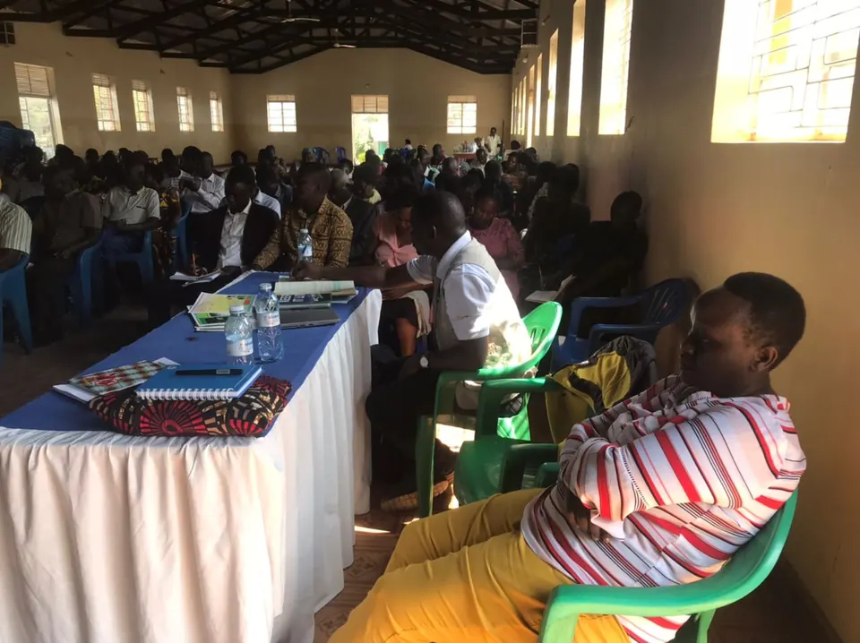

Contact
Have a question? We’re here to help
Reach the TOPA team in Fort Portal by phone, email or message. We’d love to hear from farmers, partners and buyers.
Get in touch
Visit, call or write to us
Send a message
We usually respond within two working days.
FAQ
Frequently asked questions
How can I join TOPA as a farmer?
Contact our Fort Portal office by phone, email or the form on this page. Members get access to training, market linkages and value-addition services.
Where is TOPA located?
Our office is on Mugurusi Road in Fort Portal, just after Marie Stopes Uganda. We work with farmers across 9 districts in Western Uganda.
Do you supply bulk or export orders?
Yes. We supply organic raw materials and essential oils, including chia, castor, rosemary and mint, to distributors and international buyers. Samples have gone to Europe and the Americas. Ask us for samples and pricing.
Where can I buy TOPA retail products?
Our packaged products are marketed and distributed by Fortiemart Market Place (+256 753 180015). You can also contact our office directly.